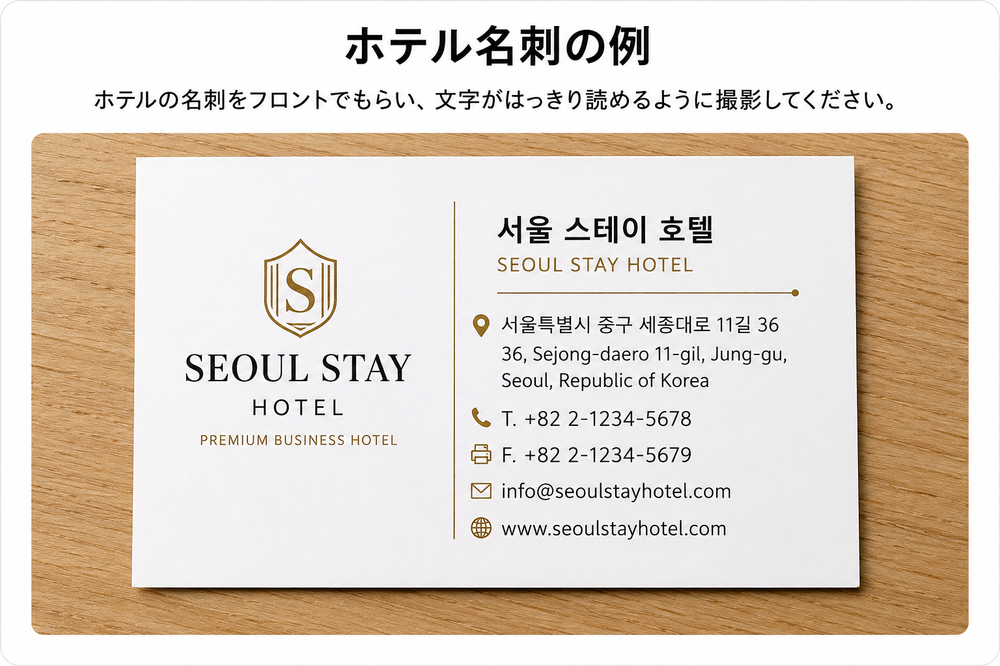

参考写真
ホテル情報と荷物写真の送り方を確認してください。
ホテル名刺（推奨）
ホテルのフロントで名刺をもらい、文字がはっきり読めるように撮影してください。

ホテル名刺のサンプル
ホテル名・韓国語の住所・電話番号が読めるよう、明るい場所で正面から撮影してください。
ホテル名刺がない場合
ホテルのフロントで、次の情報を確認してください。
1
ホテル名
2
ホテルの住所（韓国語）
3
ホテルの電話番号
ホテル名・韓国語の住所・電話番号を、そのままKakaoTalkで送ってください。
送る荷物の量がわかる写真の参考例

荷物写真の良い例・悪い例
荷物全体が1枚に収まり、袋数や大きさが分かるように撮影してください。
近すぎる写真、暗い写真、一部が切れた写真、荷物が重なって個数が分からない写真は避けてください。
撮影のコツ
1
明るい場所で撮影する
窓際や照明の下など、荷物がはっきり見える場所で撮影してください。
2
少し離れて撮影する
荷物全体が1枚に収まり、袋の数や大きさが分かる距離から撮影してください。
3
スマホを横向きにする
荷物が横に並んでいる場合は、横向きで撮影すると全体が収まりやすくなります。